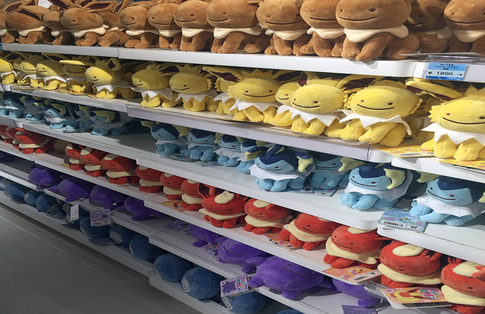

Hallo, это дневник студентки ВШЭ,которая учиться на профиле "дизайн и программирование"в группе Б18ДЗ05.Временами грущу из-за сессии,ну что ж еще делать,а кому сейчас легко?
Сегодня поговорим о косметике.Корейская косметика активно набирает популярность не только в азиатских странах, но и по всему Миру. Корейские средства выделяются из общей массы европейских средств своей необычной, приятной глазу, упаковке. Но, помимо красивого внешнего вида, корейская косметика слывёт своим качеством и эффективностью. И это, по большей части, заслуга самих корейцев, которые очень придирчиво относятся к ее выбору, внимательно изучая составы и отзывы в интернете. Благодаря большой конкуренции и строгости покупателей, производителям постоянно приходится улучшать качество своей продукции, разрабатывая новые компоненты и новые форматы.
Потребители из стран Азии больше сосредоточены на уходе за кожей — траты на уходовые средства примерно в четыре раза больше, чем на декоративную косметику.
Корейцы считают, что основная красота заключена в чистой, свежей и здоровой коже. При этом основной акцент делается на достижении трех эффектов – осветление кожи, антивозрастное действие и защита от УФ-лучей.
Сегодня поговорим о дизайне косметики Корейская косметика сильно отличается от продукции других стран дизайном упаковок и бренды очень внимательно относятся к внешнему оформлению своей продукции. Известно, что корейские потребители очень хорошо реагируют на милые, очаровательные и забавные упаковки, поэтому в среднем ценовом сегменте на рынке много баночек в виде зверушек, овощей, фруктов, различной посуды (баночек с джемом, кружек и т.п.).
В Корее очень развиты моно-брендовые магазины с ярким, узнаваемым и продуманным индивидуальным дизайном. При этом собственные моно-брендовые магазины часто открывают и бренды масс-маркет уровня, в том числе и активно используя франчайзинг. Большой популярностью пользуются road shop – улицы, на которых одновременно расположены множество отдельных магазинов разных брендов с широко распахнутыми дверями, вынесенными наружу рекламой и образцами товара, и стоящими рядом, раздающими образцы зазывающими внутрь промоутерами. Знаменитая улица Мёндон (Myeong-dong) – косметический рай Сеула, на которой один за другим расположены эффектные фасады всех самых известных корейских брендов.

Сегодня поговорим о личных дневниках.Почему я восхищаюсь кореянками?ПОТОМУ ЧТО ОНИ УМЕЮТ ВСЕ ПЛАНИРОВАТЬ.Как нистранно, каждая кореянка ведет дневник/планнер/блокнот, где расписано все до милочайших
деталей.Как бы я не старалась, имея красивые дневники, только и делала,что писала первые дни, а потом попросту забрасывала.Но девушки из Корее не такие, они пойдут
на все,чтобы выполнить все по расписанию.Увидев, какая у них учеба в Вузе, сразу становится понятно,почему так все происходит.Слишком все загружено,а иногда вообще
не спят (прям как я в период сессии). Но зато, у них очень дешево продаются канцтовары, я как любитель всего милого, испытываю маленькую зависть, что у них можно
все купить за маленькую цену, когда в обычных магазинах ( даже на Aliexpress) накручивают хороший процент.
Сегодня поговорим о мультиках ХАЯО МИЯДЗАКИ.Не смотря на то,что мне нравится корейская культура,мультики у них точно не подходят под мой вкус.Хочу выделить особого японского художника,именно его мультики
положили фундамент характера в моем детстве.В 1989 году Миядзаки выпустил фильм «Ведьмина служба доставки» по повести Эйко Кадоно, в котором девочка из маленького городка отправляется в большой город, чтобы стать ведьмой и основать своё дело — доставку грузов и корреспонденции на метле. Первоначально режиссёром фильма был выбран Сунао Катабути, а сценаристом — Нобуюки Иссики. Миядзаки не был доволен работой Иссики, в связи с чем вносил свои изменения в проект и в конечном итоге режиссерскую работу взял на себя. Кадоно поначалу была разочарована различиями между книгой и фильмом, но Миядзаки пригласил ее посетить студию, после чего она изменила своё мнение.
Самый любимый мультик Хаяо Миядзаки как раз про маленькую ведьмочку с милым котом.

Сегодня поговорим о корейской музыке.Самое главное и глобальное из Корее - музыка в стиле k-pop[1].Это в основном группа из молодых парней или девушек с кукольной внешностью.Поэтому их называют "айдолами", то есть они им поклоняются,
и хотят быть похожими на них.Не смотря на то,что большинство певцов стали такими благодаря операциям, ни чуть не смущает преданных фанатов.Поэтому на каждом шагу можно увидеть
рекламу, как какой-то певец рекламирует маску для ухода за кожей или гигиеническую помаду, так сразу придут его/ее фанатки и раскупят,даже выставят на продажу на EBAY ,поскольку стиль k-pop стал популярным во всем мире.
K-pop — не только музыка. Жанр перерос в популярную среди молодёжи всего мира субкультуру, движимую интересом к современной южнокорейской моде и стилям. Благодаря Интернету и доступности цифрового контента K-pop достигает широкой аудитории, прежде немыслимой. Поп-культура Южной Кореи сегодня является одним из движущих факторов молодёжной культуры в Азиатско-Тихоокеанском регионе, с особым акцентом на Китай, Гонконг, Японию, Тайвань и значительную часть Юго-Восточной Азии.
Для каждой корейской группы были созданы индивидуальные light stick kpop.
Сегодня поговорим о популярных персонажей в Корее.Друзья Kakao (стилизованные как ДРУЗЬЯ КАКАО ) - это персонажи, основанные на смайликах KakaoTalk, выпущенных в ноябре 2012 года компанией Kakao , которыми управляет их дочерняя корпорация Kakao Friends Corporation . Компания осуществляет деятельность, связанную с персоналом.
Иллюстратором персонажей является Квон Сун-хо, также известный под псевдонимом Хозо.Друзья Kakao были использованы в различных продуктах и рекламных роликах и приобрели популярность и стали любимыми персонажами в Южной Корее.
Персонажи друзей Kakao были разработаны примерно через два месяца после того, как началась идея встречи в июле 2012 года. Менеджер Kakao Friends заявил, что он создал этих персонажей, чтобы сделать сервис KakaoTalk IM простым и интересным для публики:
Эти персонажи понравились многим, и я не исключение, но к сожалению,официальный сайт продуктов с KAKAO FRIENDS не отправляет в Россию.
Музи : Любопытный и игривый, Музи на самом деле кусок такуан (также известный как Danmuji на корейском языке) в одежде кролика. HOZO заявил, что он думал о takuan, думая о персонаже, который может представлять цвета желтого и коричневого цветов, которые являются корпоративными цветами KakaoTalk .
Кон : Кон, который похож на маленького крокодила, тот, кто поднял Музи.HOZO заявил, что Кон - персонаж с большим количеством секретов, всегда показывающий только сторону его лица. Название Con - это комбинация крокодила и корейского слова 콩알 (произносится как конгал), что означает «маленький».
Apeach : У Apeach есть возможность убежать от персикового дерева, узнав, что она стала моноидной из-за генетической модификации.Она игривый персонаж, а также подростковый характер в ее позднем подростковом возрасте в начале двадцатых годов.
Фродо : Фродо - богатая собака из города. У него есть сложность, что он смешанная кровь. Обычно он носит красный ошейник или галстук. Фродо официально паре с Нео, характером кошки, и показывает привязанность.
Нео : Нео - персонаж кошки с вырезом парика, и она любовник Фродо.Компания заявила, что Нео является представительной модницей персонажей друзей Какао, которые любят ходить по магазинам.
Сегодня поговорим о кофе.Почти все молодые корейцы покупают чашечку свежего кофе в starbucks, поэтому продажи в Южной Корее всегда на высокой планке.Поэтому дизайнеры решили каждый год
обновлять ассортимент айдентики.К каждому празднику starbucks выпускает красивые термосы и стаканы.Жаль, что такого нет в России.Поэтому в Корее без особого труда
стоит найти подарок на новый год в форме термоса starbucks, которая радует дизайном и функциональностью.
Сегодня поговорим о кафе.Так как в Корее очень любят кошек, то в Сеуле можно найти не только кошачьи кафе, но и кафе посвященное Hello Kitty. Розовый цвет здесь повсюду, он просто кружит голову: все декорации в кафе выполнены в розовых тонах.
Для ярых поклонников Hello Kitty будет бонусом то, что здесь можно сделать фотографии с гигантскими куклами, а также в кафе есть сувенирный магазин с чучелами кошек, кошельками, кружками и многими другими полезными вещами с изображением Hello Kitty.


Сегодня поговорим о корейской кухне.Корейская кухня в целом острая, при приготовлении блюд обильно используются пряности, особенно красный перец: из-за него многие корейские блюда имеют характерный красно-оранжевый цвет. Широкое использование перца объясняется тем, что Корея, особенно южная — страна с тёплым, влажным климатом, а перец помогает дольше сохранить продукты. При этом перцем корейцы начали пользоваться только в XVI столетии, когда его завезли из Южной Америки португальцы. Тогда сформировался традиционный способ приготовления корейских блюд. Перчёная еда ценилась очень высоко, а понятия «вкусный» и «острый» в корейском языке стали синонимами. Набор специй корейской кухни небогат: большей частью это чеснок и перец, но они используются в разных пропорциях и комбинациях, потому получаются разные вкусы. Три главные корейские приправы — соевый соус (канджан), кочхуджан, твенджан.

Сегодня поговорим о ДОРАМАХ(сериалах).Особое внимание к чувствам
Эмоциональность и реалистичность сюжетной линии. В дорамах особое внимание уделяется чувствам, переживаниям и человеческим взаимоотношениям.
Неудивительно, что романтические дорамы завоевывают сердца женщин и девушек по всему миру. Актеры, снимающиеся в дорамах – настоящие профессионалы, они отлично передают сложнейшие гаммы эмоций. В дорамах обычно присутствует много моментов, от которых замирает сердце. Милые, смешные, трагические, героические… Зрителей заставляют сопереживать героям, погружаться в атмосферу сериала – это залог большого количества зрительских симпатий.
В дорамах всегда понятно какую цель преследовали создатели, какая идея была заложена в сериал, какой урок зритель должен извлечь. Как себя вести в той или иной социальной ситуации: как справиться с буллингом, с безответной любовью, со взаимными чувствами, с болезнью близкого человека, с неуспеваемостью в школе, как заботиться о любимых, как вести себя с родителями, стоит ли мстить... Дорамы часто дают ответ, как себя вести во многих ситуациях, с которыми приходится сталкиваться обычному человеку.И это, наверное, одна из главных причин популярности. В дорамах рассказываются не только романтические истории любви или невероятные приключения крутых парней. Это и истории о жизни школьников, студентов, офисных работников, работников кулинарии, домохозяйках, спортсменах... Непривычным для европейского зрителя может показаться такой жанр, как «повседневность». Очень сложно снять сериал о повседневной жизни, увлекающий зрителя с первых кадров. Но дорамам это удается. Очень интересно смотреть, например, сериал о художниках, если ты сам любишь рисовать. Не менее интересно дорамы повествуют и о жизни домохозяек или работниках «скучных» профессий, вроде курьера, кассира фастфуда или офисного работника. А учитывая то, что в дораме всегда заложена идея или урок, из сериала можно почерпнуть действительно полезную информацию.
Сегодня поговорим о моде.С момента, когда Корея открылась миру, в её культуру стали проникать западные веяния, в том числе и моды. Мы не будем рассматривать 20-й век, так как мода этого столетия была точь-в-точь как в европейских странах. Лишь в начале нового, 21-го века, случился настоящий "корейский бум". Каждый второй интернет-магазин одежды стал предлагать своим клиентам стильные вещи из Кореи. Несколько лет в России царил сайт Ali Express, но в последнее время люди отказываются от китайского производителя из-за некачественного товара. Да, он дешёвый, но иногда вещь может так полюбиться, что лезущие из всех швов нитки сильно расстраивают, а перспектива выбросить клёвую блузку в мусорный бак приводит к огорчению. Стремление найти что-то недорогое, но качественное привело российского покупателя на сайты с корейской одеждой.Культура и история страны отразились на менталитете корейцев и прочно закрепились в моде. К примеру, современные кореянки почти никогда не оголяют плечи, не носят блузы с декольте, зато предпочитают короткие платья и шорты. Короткие – значит чуть выше колен. Этим самым они демонстрируют свои стройные ножки. Конечно, не будем говорить за всех, ведь всегда есть леди, которые любят продемонстрировать абсолютно все свои прелести. Мужчины, кстати, тоже очень сдержаны в одежде. Предпочитают лёгкие рубашки-поло, брюки или шорты.
Сегодня поговорим о покемонах.Это сбывшаяся мечта для всех фанатов этой телевизионной программы, так как в нём находятся всевозможные товары с главными персонажами сериала.
На полках вы можете найти мягкие игрушки с вашими любимыми Покемонами (безусловно, среди них выделяется Пикачу). Есть также брелки, школьные принадлежности (рюкзаки, ручки, блокноты и папки). Имеются там и принадлежности для еды: палочки и столовые приборы, специальные наборы, куда японские дети кладут свои обеды, и даже сама еда - например, такая же лапша быстрого приготовления, какая была в мультфильме у Пикачу; кроме того, там продаются коробки и жестяные банки с печеньем в форме Пикачу, рамен и сладости. В наличии есть игрушки и фигурки различных Покемонов, а также игральные и коллекционные карты. Есть здесь носки и рубашки, разные украшения и множество аксессуаров для вашей электроники - зарядные устройства и чехлы для телефонов. Кроме того, здесь есть отдел с предметами красоты, например, украшения для волос.

Сегодня поговорим о цветах.В этом особенно легко убедиться весной, когда буйство красок корейских городов не позволяет взгляду скучать. Цветы повсюду. Конечно, цветы в Корее – впрочем не только цветы, но и вечнозелёные кустарники – цветут весь год. Кроме, разумеется, зимы.Весна же отличается не только самым бурным в течение года цветением, но и особым сочетанием влажности и температуры воздуха, вследствие которого в это время он особенно насыщен сладкими ароматами цветов. Они настолько сильны и состоят из такого разнообразия оттенков, что, ощущая их, невольно забываешь, что находишься в черте города, в котором полным-полно людей и той самой техники.


Сегодня поговорим об Аниме.В отличие от мультфильмов других стран, предназначенных в основном для просмотра детьми, бо́льшая часть выпускаемого аниме рассчитана на подростковую и взрослую аудитории, и во многом за счёт этого имеет высокую популярность в мире. Аниме отличается характерной манерой отрисовки персонажей и фонов. Издаётся в форме телевизионных сериалов, а также фильмов, распространяемых на видеоносителях или предназначенных для кинопоказа. Сюжеты могут описывать множество персонажей, отличаться разнообразием мест и эпох, жанров и стилей.Источниками для сюжета аниме-сериалов чаще всего являются: манга (японские комиксы), ранобэ (лайт-новел), или компьютерные игры (как правило, в жанре «визуальный роман»). При экранизации обычно сохраняется графический стиль и другие особенности оригинала. Реже используются другие источники, например, произведения классической литературы. Есть также аниме, имеющие полностью оригинальный сюжет (в этом случае уже само аниме может послужить источником для создания по нему книжных и манга-версий). Значение термина «аниме» может варьироваться в зависимости от контекста.
Сегодня поговорим об актере.Ли Чон Сок родился 14 сентября 1989 года в Сеуле, Южная Корея. Начал самостоятельную жизнь, когда учился в старшей школе. Как раз в это время он поступил в школу исполнительского искусства. Ли Чон Сок, учащийся на факультете «Professional Motion Pictures Art» в «South Korean Konkuk University», принял участие в кастинге для участия на телеканале SBS, когда ещё учился в средней школе. Дебютировал как модель в 15 лет.
Сыграл главные мужские роли в дорамах «Я тебя слышу» (2013 год), «Доктор чужестранец», «Пиноккио» (2014 год), «W: Меж двух миров» (2016 год), «Пока ты спишь» (2017 год).
Самая крутая роль,да и сам сериал, который побил все рекорды в Корее называется "Пока ты спишь".Сюжет состоит в том,что главные герои видят во сне будущее(не только свое,но и других людей).Пытаются помочь,изменяют будущее,но забывают самое главное, что изменив будущее этого человека,
в сокром времени оно измениться у другого.Поэтому все время в сериале напряженные моменты и яркая игра актеров.